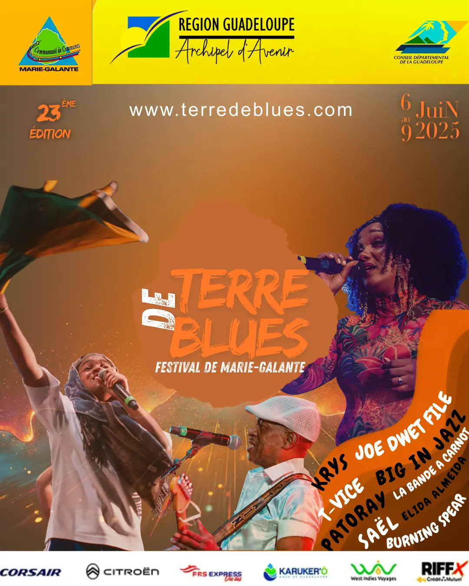
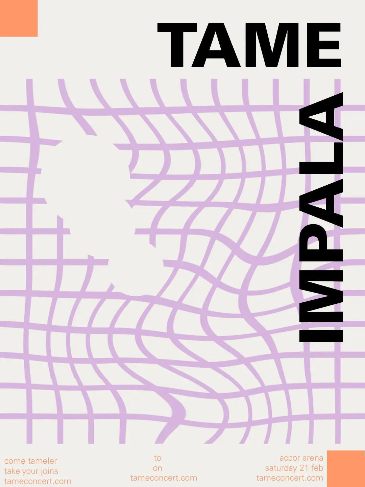
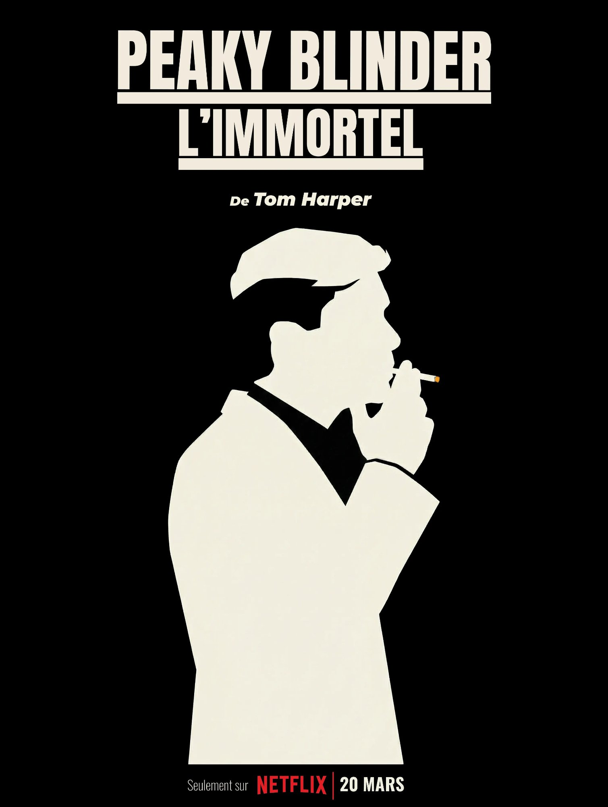
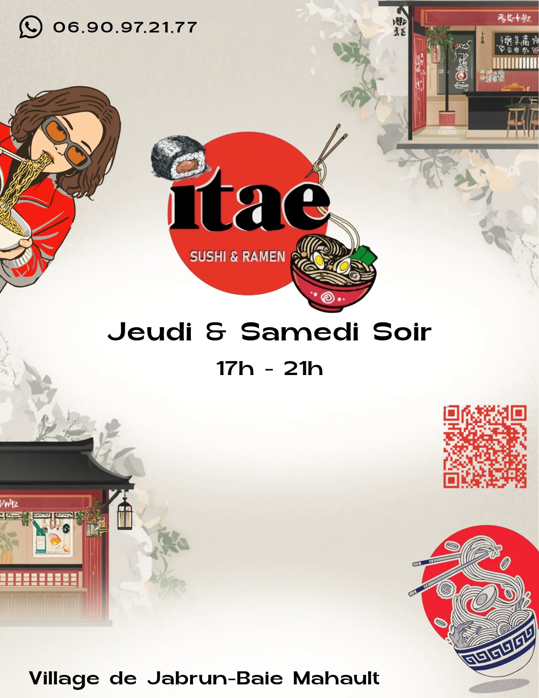
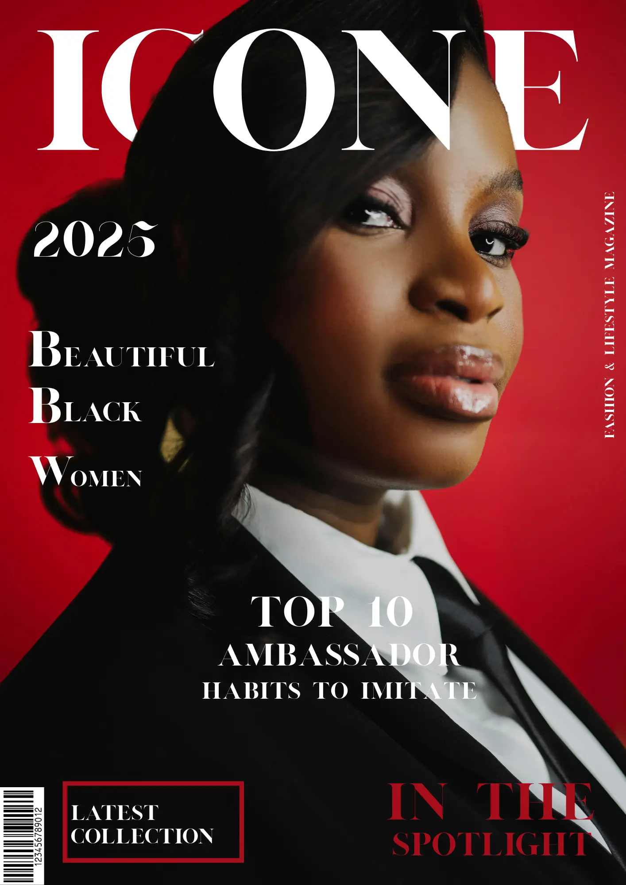
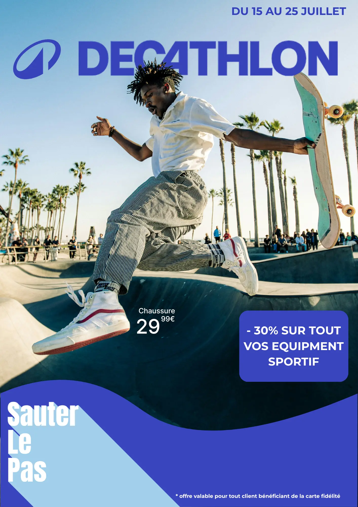

Flyer Festival Terre de Blues
Flyer promotionnel — ambiance musicale et identité visuelle dynamique.
Portfolio
Production graphique, développement web et audiovisuel

Flyer promotionnel — ambiance musicale et identité visuelle dynamique.

Design de concert fictif Tame Impala — style swiss/international.

Affiche de film — design minimaliste en silhouette, contraste et typographie cinématographique.

Flyer promotionnel déclinable en post Instagram — identité japonaise élégante.

Couverture magazine — mise en page, typographie et composition photo.

Exploration créative — composition visuelle et design pour enseigne sportive.
Site web associatif de protection marine en Guadeloupe — SAE 1.05.

Affiche d'exposition fictive — triptyque Pop Art au [mac] Marseille.
Cadrage, montage, narration visuelle et habillage sonore.
Short vidéo dynamique — montage rythmé et format vertical.
Aucun projet ne correspond à votre recherche.